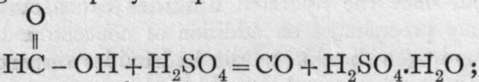
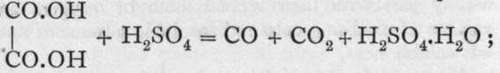
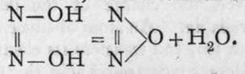

Neutral Oxides, Class I
Description
This section is from the book "Modern Chemistry", by William Ramsay. Also available from Amazon: Modern Chemistry: Theoretical and Modern Chemistry (Volume 2).
Neutral Oxides, Class I
The next neutral oxides met with are carbon monoxide, CO, nitrous oxide, N20, and nitric oxide, NO. These are all gases, but condense at low temperatures to colourless liquids, and at still lower, freeze to white solids.
Carbon monoxide is prepared by burning carbon in a supply of oxygen insufficient to convert it into the dioxide; or by passing the dioxide over a layer of carbon, heated to redness. It appears that the monoxide is always the first product; for if moisture be excluded during the combustion of carbon in oxygen, the amount of dioxide relatively to the monoxide is very small; and it is known that if water-vapour be absent, carbon monoxide cannot be induced to explode with oxygen. If even the minutest amount of moisture be present, on passing a spark the union takes place with explosion. This phenomenon is not easily accounted for ; it is readily represented by the equation 2CO + H2O + O2 = 2CO2 + H2O. Can it be that at the very low pressure of the water-vapour a trace is ionised into H and -OH, and that the -OH furnishes the oxygen for the CO, the hydrogen recombining with oxygen to re-form the molecule of water ? For it has been found that no moisture is requisite to promote the union of oxygen and hydrogen if these gases be heated together. Phosphorus and sulphur, too, show reluctance in uniting with oxygen, in absence of moisture. In ordinary moist air, carbon monoxide burns with a blue flame. It is nearly insoluble in and has no action on water.
Other methods of preparing carbon monoxide are: by withdrawing the elements of water from formic acid by adding it drop by drop to warm concentrated sulphuric acid; by heating a mixture of oxalic acid with concentrated sulphuric acid;  the carbon dioxide is separated from the monoxide by bubbling the mixture of gases through a solution of caustic potash, which absorbs the dioxide, allowing the monoxide to pass ; and lastly, by heating a mixture of potassium ferro-cyanide and fairly concentrated sulphuric acid ; K4Fe(CN)6 + 6H2SO4 + 6H2O = 2K2SO4 + FeSO4 + 3 (NH4)2SO4 4- 6CO. In the last reaction, it may be taken that hydrocyanic acid, HCN, is first liberated, and that it reacts with water, forming ammonia and carbon monoxide : HCN 4- H2O =a NH3 4 CO ; the ammonia subsequently combines with the sulphuric acid.
If carbon monoxide is passed over metallic nickel or iron in a fine state of subdivision produced by reducing their oxides, volatile compounds are formed of the formulae Ni(CO)4, and Fe(CO)5; on exposing the latter to light gold-coloured crystals are formed, of the formula Fe2(CO)r The nickel carbonyl boils at 43% and the iron penta-carbonyl at 1030; di-ferro-hepta-carbonyl decomposes when even moderately heated. At 18o° these compounds are decomposed into metal and carbon monoxide, the metal being deposited as a mirror on the hot surface.
Nitrous oxide, N2O, is most readily prepared by heating ammonium nitrate, NH4NO3; the equation is: NH4NO3 = N2O -f- 2H2O. It is somewhat soluble in water, and is best collected by downward displacement. The aqueous solution has a sweetish taste; and the gas, if breathed, produces insensibility; it is therefore frequently employed by dentists as an anaesthetic. If a mixture with air is respired, it produces with some persons a state of excitement, which has procured for it the name " laughing-gas." It is an endothermic compound, and if submitted to sudden shock it explodes with violence. It may be supposed that the fulminate used to explode it decomposes some molecules in the neighbourhood; these, on decomposing, evolve heat, and decompose their neighbours, and the explosion rapidly travels throughout the gas; the products are nitrogen and oxygen. A candle will burn in nitrous oxide, for the temperature of the flame is sufficiently high to decompose the gas, and the combustion proceeds as in dilute oxygen. Although nitrous oxide is not acted on by water or bases it has claims to be regarded as the anhydride of hyponitrous acid, from a solution of which it is liberated by heat: As neither ammonium nitrate nor hyponitrous acid can be reproduced by bringing together nitrous oxide and water, its production by heating one of these compounds is termed an " irreversible reaction."
Continue to: